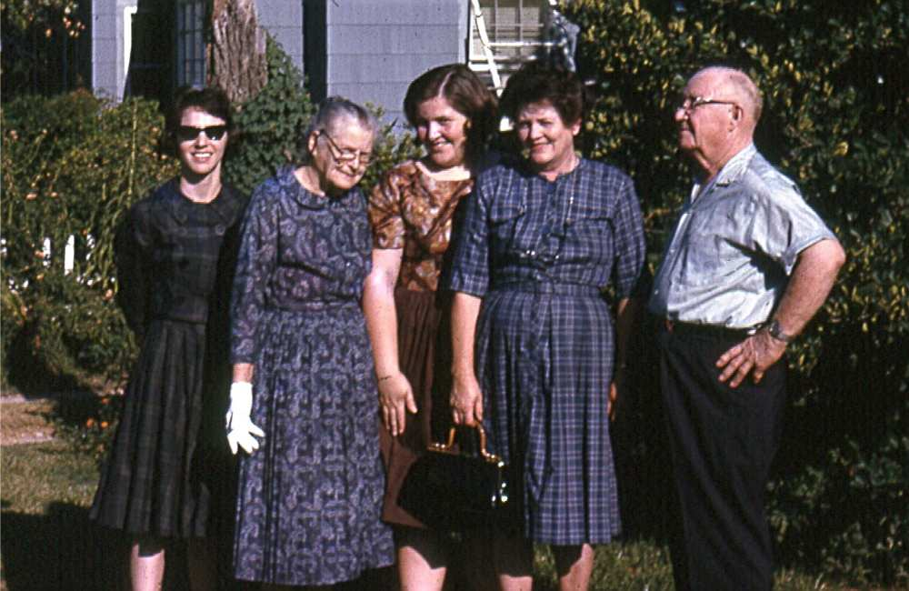
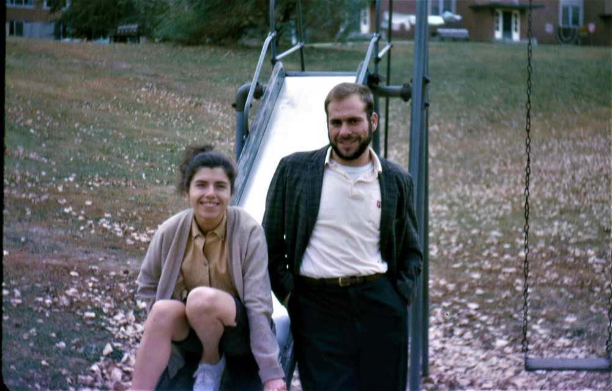
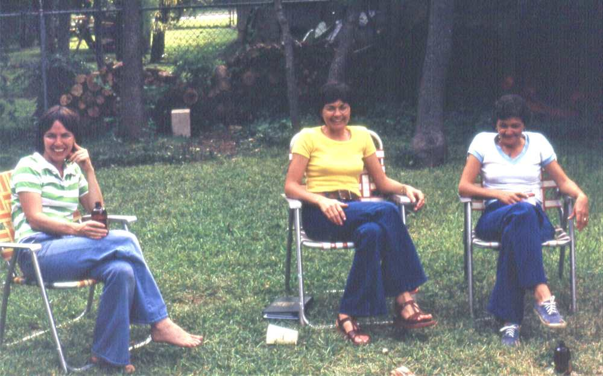

I don't know many of Pat's friends before high school; I can only go by available pictures. If you have a picture of yourself with Patricia Bird, I would like to include it in her site. Please forward a digital copy of your picture to gwbronstad@yahoo.com. Please add "who", "what", "where" and "when", whenever possible.
Fort Worth Friends
Fort Worth Friends
Patricia had many friends in school, but we have few pictures. It took a while for us to develop the practice of taking photographs.
......
Patricia M Bird with friend.
Carefree childhood moment captured on film. This may have been the Bird Family Bluff Street house.
Tom and Jill Mitchell with Pat and Walt.
We've known Tom since High School; here we stand at their North Carolina Home.
Nancy (nee) Garrett
Picture taken at 40th Birdville High School reunion, 1999. Pat cried when she learned of Nancy's death.

Good Bye before moving to Ann Arbor
Saying good bye to Walt's family before moving to Ann Arbor, September 1963. Pat stands next to Walt's maternal Grandmother Ethel (Embrey)(Price) Walton. Next are Walt's Sister Bette, Mother Louise and Father, Clyde.
Mike Fox entertaining with guitar and song.
Mike and Walt both strived to make their place in the world. His forte was the dramatic, the extroverted.
Mike's wife, Jane in our Norris kitchen
Pat and I and the Foxes frequently exchanged visits in each others homes.
Julie Fox, foreground, Jane and Amy in background.
This is a meal preparation scene; the women command the kitchen. Amy Fox, Kate, Kris and Pat are partly seen.
Julie graduated The University of Texas"
Proud father Mike told me at Julie's birth that I was her godfather. He knew I was a commited atheist, so I took it the statement as a joke.
Rusty Boyd tried his hand at falconry
Rusty is one of those people blessed with charisma.
Betty Jordan at Clyde family picnic
Walt's Mother, Louise wanted her extended family to gather on her inherited slice of her parent's farm.
Michigan Friends
Michigan Friends
Patricia and I lived in Michigan from 1963 to 1965, then later 1969 to 1974. I took very few pictures before I had a capable camera (1969), thus I have few or no pictures of friends Pat made while going to EMU in Ypsilanti, MI.
......

Ros and Dick Zelman.
Married student housing at The Univeristy of Michigan brought diverse students together
Bill Moran and son.
Walt met Bill when both worked at Ulrich's Books.
Jim and Linda Taylor
Walt met the two Psychology students first in '63 then in '69. Here we rest during a war protest in Washington D.C..
Mike and Vi Jurica in their adobe home
We've known Mike and Vi since Army days; knew them in Michigan as well as their New Mexico mountain home.
Louise Townsend.
Louise and Jim Townsend were our closest Whitmore Lake neighbors.
El Paso Friends
Walt in Military, Pat at UTEP Friends
Patricia began her college work at Eastern Michigan University in Ypsilanti Michigan, she resumed at Chicago Circle in Illinois, then a semester at North Texas State University at Denton. She finished her BA at University of texas at El Paso.
We moved a lot in the 60's; they were unsettling times.
OC Tom Parades and Wife.
The last few weekends of OCS had gatherings with spouses and girl friends. This is an Aberdeen Proving Grounds venue.
Jack Butler Army friend.
Jack and Walt met in the Special Training Company, 2d BCT BDE; Pat and Marilyn were sympatico.
Marilyn Butler of the distaff side of the Army
Army wives put up with their side of the Army role.
Mike McIntyre
Mike and Pat met at UTEP.
Ginger McIntyre.
Ginger was spouse of Mike
Austin Friends
Pat and Walt lived in Austin from June 1975 to June 1985, then from February 1990 to January 2019
Patricia grews friendships related to childrearing in Austin's Zilker neighborhoods. Later she grew friendships related to work and neighbors in the Windsor Park neighborhood.
......
Aileen Landrum had two sons and no daughters. . ..
Aileen's youngest son and our son Matt played often despite the age difference. Aileen could not resist the twin daughters.

Pat, Aileen's sister and Aileen.
Neighbors relaxing with a beer.
Cicily, Harriet and Paulete.
<
Paulette and Pat became friends through Zilker Elementary School PTA; at one point they were joint PTA Presidents.
Renee Gravois and 1982 Easter basket
The Bronstad's went to the Gravois' home for an Easter egg hunt.
Daniel and Renee Gravois, Pat and Harriet,
Years have passed since the '82 Easter.
David Humphrey at our Norris home.
David was an archivist at the LBJ library. He was instrumental in telling all our children about part time work positions there.
Louise Bronstad, Elouise Krabbenhoft and Clyde Bronstad
The event looks like a childrens birthday celebration involving Bronstad and Krabbenhoft children
Pat Bronstad and Daniel Gravois
Patricia having a good time with my Father's hat
Sandy Teniente at her home.
Sandy and Irene were our closest neighbors at our Briarcliff home.
Irene Garcia at her home.
Sandy and Irene were very neighborly; I hope Pat and I did as well by them.
Amy Taylor and Pat
Amy Taylor, wife of Craig, died with Covid 19 in 2020.
Craig Taylor and Eda Gowdy
Craig is Ruby's son, Eda was a neighbor on Briarcliff.
Ruby Taylor with Pat's cat, Miga.
Ruby, now a centenarian, was a ball of energy whom we met the first year we lived on Briarcliff.
New Zealand Friends
Pat and Walt lived in New Zealand from July 1985 to December 1988. First in Lower Hutt, thence in Karori, both more or less suburbs of Wellington.
Patricia .....
......
Bryan Tyler.
Bryan and Pat were next door neighbors when we lived briefly at 123 Campbell in Karori
Pat and Bryan Tyler
Both Pats became jogging friends in Wellington. Pat and Bryan visited us when we lived in Portland. The setting for the photograph is the Columbia River Gorge..
Jackie and family back in New Zealand
Pat met Jackie in Portland. The two had a good time running together in Portland. Jackie showed Pat the New CJCLDS Temple in Portland before it was consecrated.